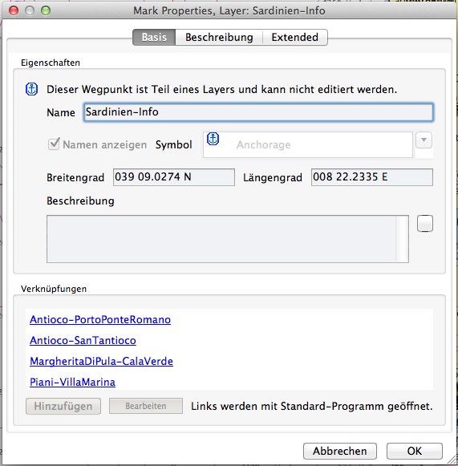
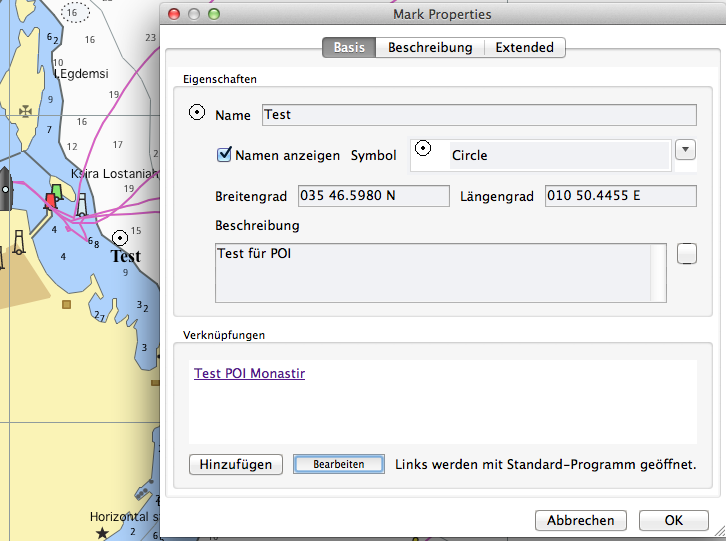
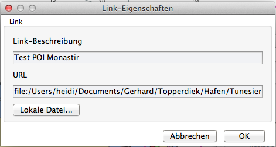
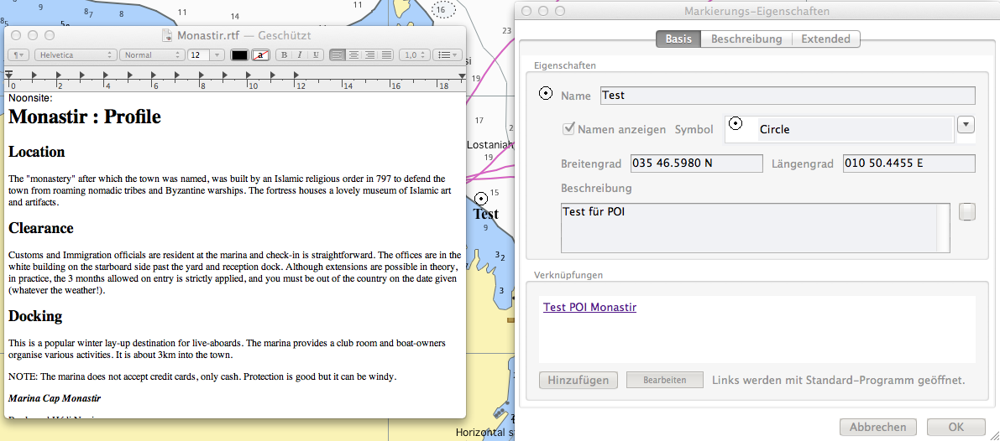

Erweiterte Markierungen
Für ältere Versionen wurde bereits ein Weg gefunden, Zusatzinformationen auf den Karten einzubetten. Siehe dazu hier.
Diese Funktionsweise ist auch weiterhin in neuen Versionen verfügbar, allerdings lassen sich die so erzeugten Daten nicht mit der nun verbesserten Funktionsweise bearbeiten. Zudem ist der bisher in den alten Versionen auftauchende Menüpunkt "Zusätzliche Informationen" jetzt entfallen. Es erscheint nun alles einschließlich der Verknüpfungen (Links) mit dem Rechts-Klick Menüpunkt "Markierungs-/WP-Eigenschaften" auf eine Markierung.

Die auf die alte Art und Weise mit Layern erzeugten Daten lassen sich mit der neuen Funktionsweise also nicht editieren, sondern das geht nur über die alte, umständliche Art.
Wird jedoch nun eine neue Markierung erzeugt, kann mit den neuen, erweiterten Funktionsweisen leicht eine Art Hafenhandbuch mit eigenen Zusatzinformationen erstellt werden. Im Englischen werden solche Punkte auch als POI (Point of interest) bezeichnet. Im Routenmanager können die Markierungen auf der Karte ein- oder ausgeblendet werden.

Unter der Lasche Basis des mit Rechts-Klick Kontextmenü oder dem Routenmanager aufgerufenen Eigenschaften-Fensters kann der Markierung ein Name zugewiesen werden, der wahlweise angezeigt wird oder nicht. Das anzuzeigende Symbol der Markierung wird aus der Liste gewählt, die auch die eventuellen eigenen Symbole aus dem Verzeichnis UserIcons enthält. Breiten- und Längengrad wird automatisch eingefügt und ändern sich mit Verschieben der Markierung oder können von Hand eingetragen werden. Eine Beschreibung für die Markierung kann auch bei längerem Text unter der Lasche Beschreibung eingegeben werden. Verknüpfungen (Links) sind das Herzstück. Sie enthalten Verweise auf Daten (extern im Internet oder lokal auf dem Computer), die sich bei Klick auf den Link-Namen mit dem jeweiligen Anzeige-Programm öffnen. Diese Daten können Bilder, PDF-Dateien, Text-Dateien usw. sein.

Mit dem Schalt-Button "Hinzufügen" wird eine neue Verknüpfung erstellt. Der Schalt-Button "Bearbeiten" schaltet in den Editier-Modus um, so daß ein Klick
auf den Link jetzt nicht mehr die Anzeige der Daten startet, sondern das Editieren des Links erlaubt (Bild oben). Die Link-Beschreibung enthält den Link-Text,
unter URL wird entweder eine http:// Adresse eingetragen oder eine lokale Datei, die mit dem Button "Lokale Datei..." auch ausgewählt werden kann.
Unter der Lasche "Extented" kann die Markierung auf der Karte ausgeblendet werden, im Routenmanager kann man dann die Markierung (Wegpunkt) wieder einblenden.

Im Beispiel wurde dem Link eine RTF Textdatei hinterlegt.